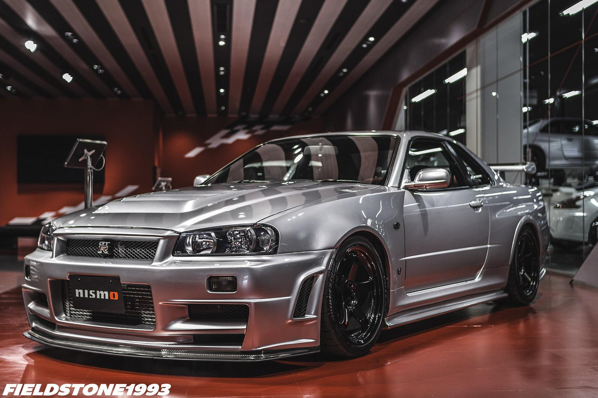
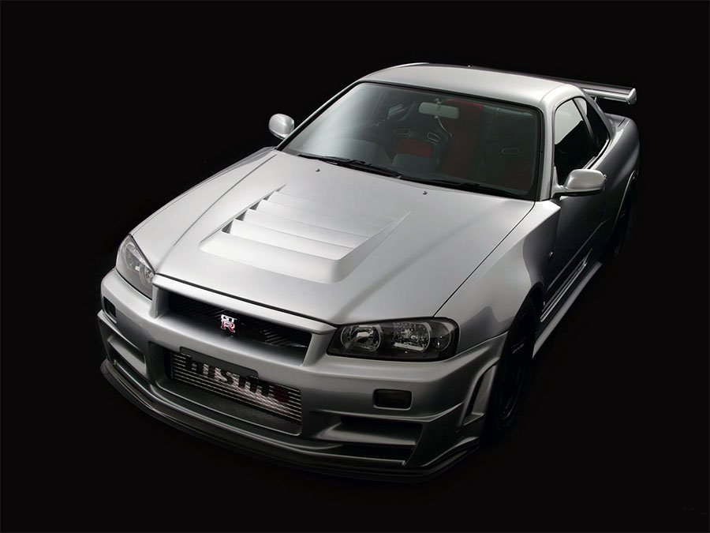
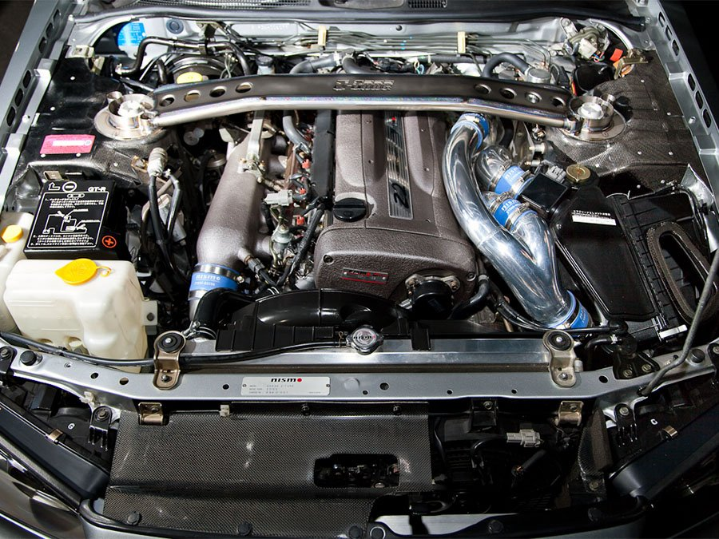
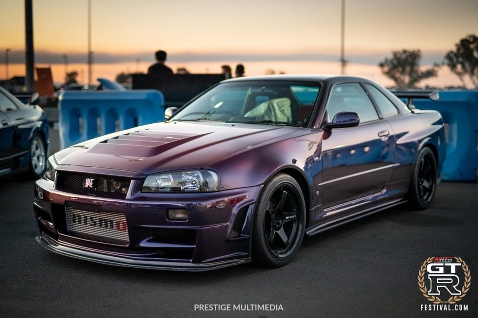
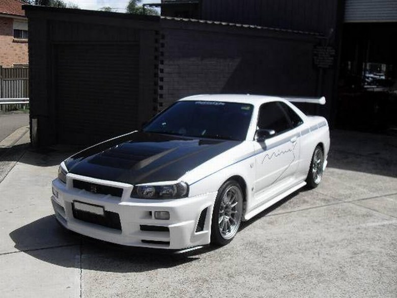

| Efectivamente, este Nissan Skyline GT-R R34 Z-Tune es el más caro del mundo en su especie. Sí, se trata de esa edición limitada con las que muchos hemos tenido sueños húmedos a lo largo de varias décadas, el R34 más especial de todos los tiempos. Un coche que todo petrolhead (rico) debería tener el en garaje al menos alguna vez en la vida. De hecho, si eres fan de los japos sería imperdonable que no lo tuvieras a escala en tu estantería. |  |
Fundada en 1984 tras la fusión de los departamentos de competición de Nissan Oppama y Omori, Nissan Motorsport International (Nismo) logró grandes cosas en diversas disciplinas de las carreras de circuito.
En particular, Nismo creó una serie de autos del Grupo C ganadores de campeonatos y el Skyline GT-R que, una vez que los legisladores lo excluyeron de la escena de los Turismos del Grupo A, se convirtió en la plataforma elegida en las carreras de GT japonesas.
Más allá de las versiones estándar de los R32, R33 y R34 GT-R de carretera, Nismo desarrolló versiones N1 mejoradas de cada uno para homologar piezas especiales para uso en carreras. También estaba el famoso 400R de 1996 basado en el R33, inspirado en las 24 Horas de Le Mans de la clase GT1 de ese año.
Desafortunadamente, una versión similar mejorada del R34 estilo 400R producida entre enero de 1999 y agosto de 2002 nunca se ofreció oficialmente. Por supuesto, los clientes podían equipar su coche con piezas de repuesto del catálogo de Nismo, pero la producción del R34 llegó a su fin sin que se hubiera producido una verdadera variante superdeportiva lista para usar. Inesperadamente, eso cambió 18 meses después de que terminara la producción del R34 cuando se dio luz verde para una serie limitada de posiblemente los autos de carretera GT-R más extremos jamás vistos.
Construido para celebrar el vigésimo aniversario de Nismo, el R34 Skyline GT-R Nismo Z-tune se desarrolló a partir de un concepto basado en el R34 que apareció por primera vez en el año 2000. Esa formidable máquina con motor Z1 había debutado en el Monte Fuji durante el festival Nismo. el 26 de noviembre de 2000 donde ganó el concurso Tuners' Battle.
Impulsado por un motor Z1 de 2,8 litros ampliado con alrededor de 600 CV y una lista muy completa de mejoras, el coche se perfeccionó posteriormente durante los dos años siguientes para transformarlo en una máquina adecuada para la carretera. Esto implicó mucha atención a la marcha, el interior, la durabilidad del motor y el cumplimiento de las emisiones, tiempo durante el cual el motor evolucionó a la especificación Z2. Un intenso programa de I+D culminó con una visita a Nurburgring a mediados de 2003, tras la cual Nismo recibió permiso para construir una serie de 20 coches para celebrar su 20º aniversario. En ese momento, el R34 GT-R había estado fuera de producción durante la mayor parte del año, por lo que Nismo comenzó a buscar autos donantes adecuados: se buscaron ejemplares JDM V-Spec estándar sin daños en la carrocería y con menos de 30.000 km en el mercado. cuentakilómetros. De vuelta en las instalaciones de Nismo en Omori, cada automóvil fue desmontado hasta dejarlo desnudo y reconstruido desde cero. El Z-tune GT-R se anunció públicamente el 14 de enero de 2005 con un precio de aproximadamente el doble que el del V Spec original. Poco después se entregaron los primeros vehículos para clientes.
| Motor Z2 de seis cilindros en línea construido a mano del Z-tune utilizaba un bloque de hierro fundido RRR derivado del GT500 que, gracias a sus paredes de cilindro más gruesas, ofrecía mayor resistencia y rigidez. En comparación con el motor RB26DETT estándar, a los motores Z2 se les agrandó el diámetro de los cilindros en 1 mm (a 87 mm) y la carrera se extendió en 4 mm (a 77,7 mm). La cilindrada era de 2771 cc, lo que representaba una ganancia de 203 cc. |  |
| CARACTERISTICAS | DESCRIPCION | CALIFICACION |
|---|---|---|
| Potencia | Potencia Mejorada: Equipado con un motor RB20DETT modificado que produce aprox 500 caballos de fuerza, lo que o convierte en uno de los skyline mas potentes jamas producidos. | 10/10 |
| Producción | Produccion limitada: Solo se fabricaron 20 unidades del Z-Tune, lo que lo convierte en un automovil extremadamente especial y exclusivo y codiciado entre los entusiastas y coleccionistas de automoviles. | 9/10 |
| Transmision | Transmision manual de 6 velocidades para un cambio suave y preciso. | 10/10 |
| Sistema de escape | Equipado con un sistema de escape de alto rendimiento para un sonido distintivo. | 10/10 |
| Peso reducido | Utiliza materiales ligeros para mejorar la relacion peso-potencia. | 10/10 |
| El Nissan Skyline R34 Z-Tune es mucho más que un automóvil; es una obra maestra sobre ruedas que despierta emociones y desafía los límites de la imaginación. Con su diseño aerodinámico esculpido para cortar el viento y su motor RB26DETT rugiendo con poderío, el Z-Tune personifica la perfección en el mundo del automovilismo. Cada curva, cada detalle, está meticulosamente diseñado para elevar el corazón y la mente de aquellos que tienen el privilegio de contemplarlo en movimiento. Su exclusividad y su legado en las pistas de carreras hablan de una historia de pasión y dedicación. El R34 Z-Tune no es solo un automóvil, es una experiencia que inspira a alcanzar nuevas alturas y a perseguir nuestros sueños con determinación y tenacidad. |  |
|
 |